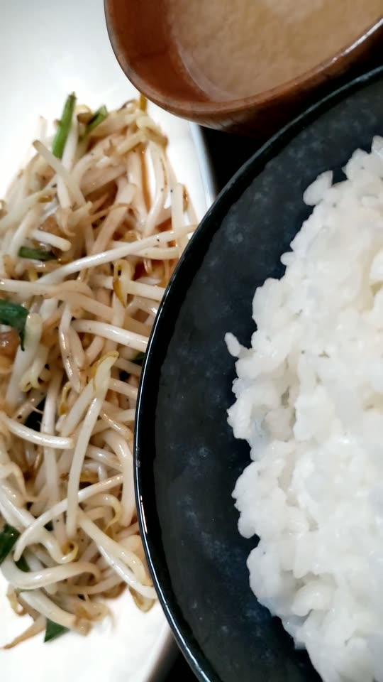
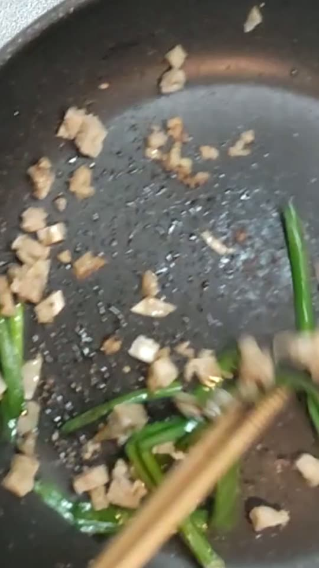

貧乏メシ｜第30回
72円でもやし炒め定食
肉は買えないので、シューマイを刻んで肉の代わりにしました。もやしでかさ増しすれば、おなかはふくれます。


材料と値段（1人前）
| もやし | 10円 |
|---|---|
| ニラ | 10円 |
| シューマイ | 11円 |
| 味噌汁 | 11円 |
| ごはん | 30円 |
| 合計 | 72円 |
※値段は、近所のスーパーで買ったときの1食分の目安です。しょうゆ・油などの調味料は入れていません。
作り方
- ニラを食べやすい長さに切ります。
- シューマイを細かく刻みます。
- フライパンでシューマイとニラを炒めます。
- もやしを入れて、強火でさっと炒めます。
- 皿に盛って、味噌汁とごはんを添えたら定食になります。
ひとこともやしは炒めすぎると水っぽくなるので、最後に入れて手早く仕上げます。
今日のクビ男
もやしは日陰でも育つのに、
僕はいつまでも芽が出ません。
この料理で使った道具・食材
動画で使っているものに近い商品を、楽天市場で選びました（同じものとは限りません）。
小さいフライパン貝印 軽いフライパン 20cm楽天市場で見る（PR）
包丁Riverline 三徳包丁 16.5cm楽天市場で見る（PR）
まな板抗菌まな板（食洗機対応）楽天市場で見る（PR）
味噌汁の素永谷園 あさげ 業務用 30食楽天市場で見る（PR）
お米岡山県産 コシヒカリ 無洗米 5kg楽天市場で見る（PR）
値段や在庫は変わることがあるので、リンク先でご確認ください。